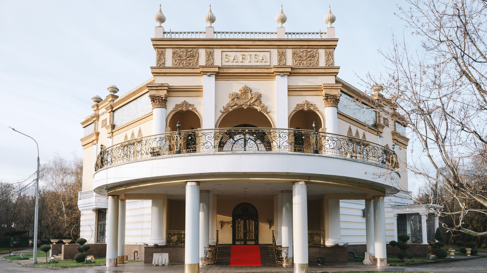
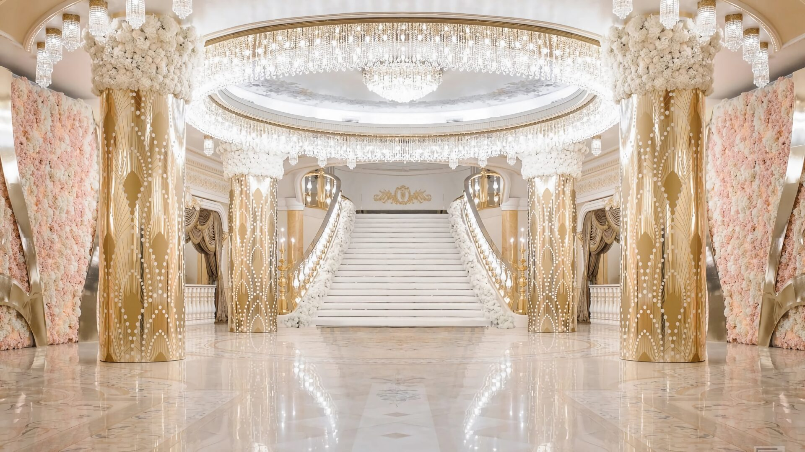

15:00
Дом торжеств “Сафиса”
Москва, Воробьёвское шоссе, 2Б
55.729306, 37.543740
Роспись пройдёт в Доме торжеств “Сафиса”. Количество мест на росписи ограничено, поэтому присутствие там согласуется отдельно.
Подробнее о площадке
“Сафиса” - торжественное здание на Воробьёвском шоссе. Здесь пройдёт официальная часть дня в спокойном семейном кругу.